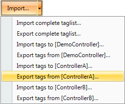

Tags
Objects connected to tags can change values in a controller, and controller values can be reflected by changing object appearance in various ways. Objects in a screen will remain static until connected to a tag.
A tag has a symbolic name and can be of different data types.
Tags can belong to a connected controller, be internal or belong to the system. Internal tags are used to handle local data values, and can be viewed and treated in screens just like regular controller tags.
The global tag list provides an overview of all used tags, regardless of controller. This makes it easy to develop projects that can be used with a variety of controllers. It is also possible to connect a tag to more than one controller simultaneously.
Adding Tags
Tags are handled by clicking on Tags in the Functions folder in the Project Explorer.
Clicking the Add Tag/Add System Tag button adds a new tag to the list. Make settings for each added tag. When predefined values are available, these can be selected by clicking the arrow at the right of the table cell.
Removing Unused Tags
The Delete button in Tags can be used to detect unused tags for immediate removal via the Remove Unused Tags dialog.
Similarly, when building the project,a notification of any unused tags will automatically be done by displaying the Remove Unused Tags dialog. To disable or enable pop-up of this dialog, go to Options in the File menu. Select Build options in the list and then select CheckForUnusedTags under Misc. Change the status of the function to True or False.
Note
Always review the candidates for removal prior to removing unused tags, since removing tags that are used in e.g. a script can result in a corrupt project.
To be able to detect tags used in scripts, a certain syntax must be used. It is recommended to use the IScriptTag interface within the arguments list for the ScriptModule, thus enabling the ScriptModule to be used and reused without being locked to a specific tag setup. Use the syntax Globals.Tags.TagName for direct tag references within scripts and expressions.
If an external editor, e.g. Visual Studio, is used for editing a script, the cross-reference will not be updated when building the project in iX Developer. The Remove Unused Tags function will report tags used in these scripts as unused.
For iX Developer to recognize a change made with an external editor, the script file needs to be opened in iX Developer and provided with just any small change using the script editor in iX Developer. Save the project once more before build.
 |
The Sum method inside the script can be utilized in many different contexts. The following picture shows how Tag3 will contain the sum of Tag1 and Tag2 when the button is clicked. Notice that the tags used in scripts must be activated to work as expected.
Related information |
|---|
Basic Settings
To reduce complexity in the tags configuration page, some columns can be made hidden/visible. The basic settings are always displayed. It is possible to customize which columns to show by default using Tags Editor Options.
Enter name, data type and access rights for the tag. Select if the tag is to belong to a controller entered on the Controllers tab. If no controller tag address is entered, the tag will be treated as an internal tag.
Parameter | Description |
|---|---|
Name | Symbolic name. The name can be any alphanumeric string, beginning with a letter (a-z, A-Z). |
Data Type (Tag) | Selection of presentation format; for example used to show the correct engineering unit when using scaling. DEFAULT follows selection made for Data Type (Controller). |
Access Rights | Defines access rights to the tag |
Controller | Controller address |
Data Type (Controller) | Selection of data type |
To rename a tag it is necessary to enter the Rename dialog for the change to take place. The dialog appears when clicking on the three dots to the right of the name in the tags list.
Related information |
|---|
Scaling
Scaling affects only tags connected to a controller.
Checking the Scaling box displays the Offset and Gain columns. These parameters are used to change the scale of the controller value to a value shown in accordance with the following equation:
Panel value= Offset + (Gain× Register value)
When the value for an object is changed from the HMI panel, the scale is changed to the value shown in accordance with the following equation:
Register value = (Panel value - Offset)/Gain
Scaling does not affect the defined maximum and minimum values, or the number of decimals.
Data Exchange
Checking the Data Exchange box displays the Direction and When columns. Data exchange supports real time data exchange between different controllersand also of different brands. The data exchange can be performed when a digital tag is set or ata certain time interval, set up on the Triggers tab. Data exchange can be selected for individual tags, array tags or for the complete range of tags.
Related information |
|---|
Others
Checking the Others box makes it possible to configure a number of additional tag properties.
Parameter | Description |
|---|---|
Description | An optional description of the tag. Description of system tags is added automatically. Please note that the description can not be more than 200 characters long. Descriptions longer than that will cause build errors. |
Poll Group | Makes it possible to poll groups of tags at different intervals. |
Always Active | Prevents the tag from becoming inactive. This may be useful for actions and scripting purposes. Note: The Active setting for the controller on the Controllers tab is predominant over the Always Active setting for a particular tag. |
Non Volatile | Keeps the last tag value in memory even when the panel or PC is powered off. Only available for internal tags. |
Initial Value | Makes it possible to assign a tag an initial value at system startup. Only available for internal tags. |
Index Register | Makes it possible to select a register from which an object is to collect the shown value. |
Action | Makes it possible to configure actions based on a condition of a tag. |
Log to Audit Trail | Logs operator actions on the tag. Only available if the Audit Trail function is activated in the project. |
Audit Trail Description | Optional static or dynamic descriptions for operator tag actions, that are saved in the Audit Trail database and visible in the Audit Trail Viewer. If Dynamic Description is selected, value before change can be included in the description by using {0}; value after change by using {1}. Only available if the Audit Trail function is activated in the project. |
Adding Tags during Editing
Tags can be added directly when editing objects. When an object is selected, the tag association can be managed from the Tag/Security group in the Home or General ribbon tabs, or by right-clicking on the object and using the Mini Toolbar. In both cases, tags are added by clicking the Add button.
Note
Tags added during editing will stay internal until connected to a controller on the tags configuration page.
Related information |
|---|
Selecting Multiple Tags
Multiple rows of tags can be selected using the [Ctrl] or [Shift] keys. This makes it easy to, for example, delete a number of tags quickly.
Tag Actions
One or multiple actions can be configured depending ona changed value of a tag. The Action column is displayed when the Others box is checked in the Tags configuration page.
Clicking ... in the Actions column for the selected tag brings up the Action properties window. First, a trigger is selected, then a condition is configured by clicking Add under Condition. Select a condition, enter a value and click OK.
Note
Only integers are allowed for numeric values.
For BOOL and STRING types, only the operands == and != are allowed.
Then, configure actions to be executed when the condition is met.
Note
A tag action which alters its own tag, may cause unwanted behavior and should be avoided.
Related information |
|---|
Internal Tags
Internal tags can be used to calculate values that need not be represented in the controller, for example information only for the operator. Internal tags are selected in the same way as an external controller tags. Any number of volatile user defined tags can be created.
Note
Internal tag values will not be saved in the HMI panel when the project is restarted, unless the Non Volatile option is used.
Unlike the regular drivers, it does not matter if internal tags are used in consecutive order or not.
System Tags
System tags are used to monitor or access variables from the system. System tags are handled as regular controller tags, i.e. can be used in screens, logged, included in scripts etc. The Date and Time system tags can be used when you want to use the controller clock in the panel project. The following system tags are available:
System tag group | System tag | Description | |||||||||||||||||||||||||||||||||||||||||||||||
|---|---|---|---|---|---|---|---|---|---|---|---|---|---|---|---|---|---|---|---|---|---|---|---|---|---|---|---|---|---|---|---|---|---|---|---|---|---|---|---|---|---|---|---|---|---|---|---|---|---|
Communication | Communication Error Message | Latest communication error message | |||||||||||||||||||||||||||||||||||||||||||||||
Communication Errors | Number of active communication errors on all controllers | ||||||||||||||||||||||||||||||||||||||||||||||||
Remote Alarm Server Connection Errors | Number of remote alarm servers with connection errors, e.g. disconnected servers | ||||||||||||||||||||||||||||||||||||||||||||||||
Database | Database Error Active | Set to 1 when there is an active database error | |||||||||||||||||||||||||||||||||||||||||||||||
Database Error Message | Latest database error message | ||||||||||||||||||||||||||||||||||||||||||||||||
Database Max Size Exceeded | Set to 1 when the database maximum size is exceeded | ||||||||||||||||||||||||||||||||||||||||||||||||
Date and Time | DateTime | Current date and time | |||||||||||||||||||||||||||||||||||||||||||||||
Day | Day component of current date | ||||||||||||||||||||||||||||||||||||||||||||||||
Day of Week | Day of current week (1-7 where 1 is Sunday) | ||||||||||||||||||||||||||||||||||||||||||||||||
Hour | Hour component of current time | ||||||||||||||||||||||||||||||||||||||||||||||||
Minute | Minute component of current time | ||||||||||||||||||||||||||||||||||||||||||||||||
Month | Month component of current date | ||||||||||||||||||||||||||||||||||||||||||||||||
Second | Second component of current time | ||||||||||||||||||||||||||||||||||||||||||||||||
Year | Year component of current date | ||||||||||||||||||||||||||||||||||||||||||||||||
Project | Current Screen Id | The ID of the current screen. The data type of this tag is int16 and it only has read access. This tag gets updated every time you open a screen, with the exception on popup screens. When opening a pop up screen the current screen id tag will not be updated. When entering a screen without a screen id the tag value of the current screen id will be set to -1. Note that 0 is a valid screen id. | |||||||||||||||||||||||||||||||||||||||||||||||
Current Screen Name | Name of the current screen | ||||||||||||||||||||||||||||||||||||||||||||||||
Latest Loaded Recipe | Name of the latest loaded recipe | ||||||||||||||||||||||||||||||||||||||||||||||||
New Screen Id | The ID of the new screen. The data type of this tag is int16 and it has read/write access. The tag is always active. When the new screen id tag changes value a screen jump is made to the screen with corresponding screen id. If no such screen exists a notification message will show. If the new screen contains configured screen instances (alias), the default instance is always displayed. | ||||||||||||||||||||||||||||||||||||||||||||||||
Number of Disabled Alarms | Read the total number of disabled alarms | ||||||||||||||||||||||||||||||||||||||||||||||||
System | Project Name | Name of the current project | |||||||||||||||||||||||||||||||||||||||||||||||
Runtime Version | Runtime version of framework | ||||||||||||||||||||||||||||||||||||||||||||||||
Screen Update Time | Screen update time (in ms) | ||||||||||||||||||||||||||||||||||||||||||||||||
Available RAM | Amount of available RAM memory (in kB) | ||||||||||||||||||||||||||||||||||||||||||||||||
Available Storage | Amount of available storage memory (in MB) | ||||||||||||||||||||||||||||||||||||||||||||||||
Backlight Brightness Level | Backlight brightness level (in percent) When approaching 0% backlight, changes in brightness level may no longer be noticeable in the panel. Complete dimming (to 0%) is only possible to achieve with the marine panel types, such as iX T7AM and iX T15BM. | ||||||||||||||||||||||||||||||||||||||||||||||||
CPU Load | Amount of used CPU capacity (in percent) | ||||||||||||||||||||||||||||||||||||||||||||||||
CPU Load Core 1 [a] | Amount of capacity used in CPU Core 1 (in percent) | ||||||||||||||||||||||||||||||||||||||||||||||||
CPU Load Core 2[a] | Amount of capacity used in CPU Core 2 (in percent) | ||||||||||||||||||||||||||||||||||||||||||||||||
CPU Load Core 3[a] | Amount of capacity used in CPU Core 3 (in percent) | ||||||||||||||||||||||||||||||||||||||||||||||||
CPU Load Core 4[a] | Amount of capacity used in CPU Core 4 (in percent) | ||||||||||||||||||||||||||||||||||||||||||||||||
Current User | The user name of the currently logged in user | ||||||||||||||||||||||||||||||||||||||||||||||||
Debug Logging Enabled | Indicates if debug logging is enabled | ||||||||||||||||||||||||||||||||||||||||||||||||
Digital Output #1[a] | Digital output | ||||||||||||||||||||||||||||||||||||||||||||||||
Digital Output #2[a] | Digital output | ||||||||||||||||||||||||||||||||||||||||||||||||
Flash Memory EOL Info[a] | Information about the flash memory end of life. The three possible values are Normal, Warning - Consumed 80% of reserved block and Urgent. | ||||||||||||||||||||||||||||||||||||||||||||||||
Flash Memory Life Time Used[a] | The usage of the device life time (in percent) | ||||||||||||||||||||||||||||||||||||||||||||||||
Internal Temperature [b] | Internal panel temperature (in °C) | ||||||||||||||||||||||||||||||||||||||||||||||||
Physical RAM | RAM memory installed (in kB) | ||||||||||||||||||||||||||||||||||||||||||||||||
Serial Number[a] | Serial number of the panel | ||||||||||||||||||||||||||||||||||||||||||||||||
Storage Memory | Storage memory installed in computer (in MB) | ||||||||||||||||||||||||||||||||||||||||||||||||
Used RAM | Amount of used RAM memory (in kB) | ||||||||||||||||||||||||||||||||||||||||||||||||
Used RAM Percent | Amount of used RAM memory (in percent of physical) | ||||||||||||||||||||||||||||||||||||||||||||||||
Used Storage | Amount of used storage memory (in MB) | ||||||||||||||||||||||||||||||||||||||||||||||||
Used Storage Percent | Amount of used storage memory (in percent of all storage) | ||||||||||||||||||||||||||||||||||||||||||||||||
Windows CE Image Version | Windows CE Image Version | ||||||||||||||||||||||||||||||||||||||||||||||||
Power LED Blink Frequency | Blink frequency of the power LED (1–10 Hz, 0= always on) | ||||||||||||||||||||||||||||||||||||||||||||||||
Power LED Blue Intensity | Intensity of the blue power LED (0–100) | ||||||||||||||||||||||||||||||||||||||||||||||||
Power LED Red Intensity | Intensity of the red power LED (0–100) | ||||||||||||||||||||||||||||||||||||||||||||||||
Power LED Green Intensity [c] | Intensity of the green power LED (0–100) | ||||||||||||||||||||||||||||||||||||||||||||||||
Max Screen Cache memory load | Amount of memory available to the screen cache (in percent of the physical RAM memory available (50–90)) | ||||||||||||||||||||||||||||||||||||||||||||||||
[a] Not applicable on X2 base, X2 pro, PC, or X2 control. [b] Not applicable on X2 base and iX TxC. [c] Not applicable on X2 base, X2 pro. | |||||||||||||||||||||||||||||||||||||||||||||||||
System tags are indicated by blue color in the tag list.
System tags are added by clicking the Add Tag/Add System Tag button in the tags configuration page.
Array Tags
An array tag is a tag containing multiple values. If the array size is >1, the tag is considered as an array tag.
Note
Array tags are only supported by controllers which use addresses that can be numerically increased.
Array Tag Set Up
Clicking the Add button adds a tag to the list. Make settings for each added tag. When predefined values are available, these can be selected by clicking the arrow at the right of the table cell.
Clicking the Data Type cell in the Controller column brings up the data type configuration page. An array tag is configured by setting the array size to a value >1.
Data type | Description |
|---|---|
Data Type | Selection of presentation format. |
Size | Set the array size. |
Array Size | If the array size is >1, the tag is considered as an array tag. |
Limitation
When using controllers with named variables and accessing individual bits with the syntax VariableName.BitNo, array tags of data type BOOL with bit addressing, are only supported for 16-bits tags.
Related information |
|---|
Cross Reference
The Cross Reference tool provides an overview of where a specific tag is used in the current project.
All occurrences of the tag in the current project are listed. Double-clicking on an occurrence in the list automatically brings you to the object or function where the tag is used.
The cross reference tool can be accessed by clicking the cross reference button on the Tags tab or on the View ribbon. It can also be accessed from the context menu.
Triggers
Triggers are used to determine when data exchange is to be performed; based on tag or a certain interval.
Parameter | Description |
|---|---|
Name | Symbolic name. The name can be any alphanumeric string, beginning with a letter (a-z, A-Z). |
Tag | Selection of a tag, which when changed to a value other than 0, triggers data exchange |
Time | Time interval between data exchange operations in the format -d.HH:MM:SS.ff (days.hours:minutes:sec- onds.fractions of a second). The minus sign is optional and indicates a negative time interval. |
Poll Groups
Poll groups allow grouping tags for polling at 5 different intervals. The groups defined on the Poll Groups tab are available for selection from the Tags tab after checking the Others box.
Parameter | Description |
|---|---|
Name | Symbolic name. The name can be any alphanumeric string, beginning with a letter (a-z, A-Z). |
Interval | Polling interval in ms |
Note
The following HMI panels can be set to 25 ms: BoX2 pro, BoX2 extreme and BoX2 pro-SC.
This may impact the performance of the HMI panel.
Conversion to other HMI panel types will change to lowest allowed value for that target.
Station Handling
For some controllers, it is possible for the operator to define from which controller station to read or write values. The station number is given as a prefix to the controller address.
The station number for each controller is defined on the Controllers tab of the Tags configuration page, by clicking the Settings button.
The default station is set on the Settings tab, and the stations are defined on the Stations tab.
In this example, froman Ethernet driver, Station 0 is the default station.
The default station is the station addressed without using a prefix. The other stations can be addressed either as a fixed number or as an index register. With fixed station numbers, an object is always connected to the same controller address, and only the value of this controller address can be used in the object.
When addressing for example D10 in station 2, the following syntax is used: 2:D10.
Related information |
|---|
Index Registers
With index addressing, it is possible for the operator to select from which tag an object is to collect the shown value. Without index addressing an object is always connected to the same controller address, and only the value of this address can be shown in the object.
Which tags to use for indexing are defined on the Index Registers tab of the tags configuration page. Up to eight different index registers can be used for each controller, and each index register can be used for more than one object. Index registers can be connected to any tag in the global tag list, but the tag has to be selected for each controller.
Tags are connected to index registers on the Tags tab. In general index addressing can be formulated as:
Display value= the content in tag (the object’s address + the content in the index register)
If the content in the index register is 2, and the address of the tag specified in the object is 100, the value shown in the object will be collected from address 102. If the value in the index register is changed to 3, the value in the object will be collected from address 103 instead.
Index Addressing Example
Using index registers may be convenient when for example controlling torque and speed of a number of connected motors from the same screen, without having to configure and display maneuverable objects for each motor.
The following example is based upon the presumption of three motors, and the torque and speed of each motor is held in a different tag:
Motor 1 | Motor 2 | Motor 3 | |||
|---|---|---|---|---|---|
Torque | Speed | Torque | Speed | Torque | Speed |
D11 | D21 | D12 | D22 | D13 | D23 |
Create a project where the Demo Controller is selected as controller.
Add tags and labels and connect them to Demo Controller tags according to below:

Select the Index Registers tab and connect Index 1 to the MotorIndex tag (D0).
Select the Tags tab again and check the Others box in order to display the Index Registers column.
Connect the Torque and Speed tags to Index Register 1.
Now, create a ComboBox object for selection of motor, and two analog numeric objects that will display (or set) the Torque and Speed tags for each motor. Also add explaining labels.
Click Configure Texts for the ComboBox object, connect the object to the MotorIndex tag, and add three texts and values according to below.
Connect the analog numeric objects to the Torque and Speed tags.
In order to test that the index addressing works even though no controller is connected, add maneuverable objects, e.g. sliders, and connect them to the D11–D13 and D21–D23 tags.
Run the project, enter values for the objects connected to D11–D13 and D21–D23, and select the different motors using the ComboBox.
Using Index Registers for Station Handling
For some controllers, it is possible for the operator to define from which controller station to read or write values. The station number is given as a prefix to the controller address.
This is stated either as a fixed number or as an index register. The default station is the station addressed without using a prefix. The other stations can be addressed either as a fixed number or as an index register. With fixed station numbers, an object is always connected to the same controller address, and only the value of this controller address can be used in the object.
Index addressing reduces the number of tags needed as well as the number of objects to be configured in the iX Developer project when showing values from / writing to multiple controller stations.
The syntax when using index registers for station handling is for example I1:D10.
This means that the value in the controller address connected to Index 1 will point out which controller station number to read or write values.
Related information |
|---|
Expressions
The Expressions functionality is used when connecting an object to a tag and the purpose is not to use the tag value as it is. Expressions enable the user to e.g.
extracta bit froma tag, add a dynamic offset or gain, and then to use this value for a specific object.
Note
Static offset and gain for a tag is set in the tags configuration page.
The same expression can be connected to more than one object in the project.
Definition
An expression is a one line return statement in C#. The default expression code is “value”.
Using Expressions
Right-click on an object and then click the button ... next to Select Tag. The Expressions dialog is displayed.
Click New to create an expression and expression group (optional). Existing expressions are available from the Select Expression drop-down menu. Use the Edit and Delete buttons to edit or delete existing expressions.
Select among the tags, operators and functions to insert. It is also possible to type the expression manually, but without assistance from IntelliSense (auto completion). If an expression is not valid, an error message is given when validating the project. The expression is run, when the value of the original tag that is connected to the object is changed.
Expressions added to an object in a project are available only in the current project. If an object with a local expression is saved into the Component Library, the object can be used in an other project, but the expression is not included. In order to reuse expressions, they have to be saved in the expressions library.
Related information |
|---|
Library Expressions
Examples of expressions (how to extract bits from an int) are included when installing iX Developer and can be added to the project by clicking Load.
Expressions can be reused in other projects by saving them in the expression library. Select the expression in the drop-down list and click Save. The expression is saved to a file in the PC. To load the expression in another project, click Load. A selection dialog is displayed. Select the expression in the drop-down list and click OK.
If you have saved expressions to the library that you want to remove, click Delete and select among the saved expressions in a dialog. Expressions included when installing iX Developer are not listed, since these cannot be deleted.
Limitations
An expression is executed only on read, i.e. when the value is changed in the controller.
When writing a value (from e.g. an analog numeric tag), the expression is not executed.
If another tag than the original tag is used in the expression, the expression is not triggered on its value change.
If an expression that is used in more than one location is either renamed or deleted, references are not updated. A build error is given.
Expressions can be used for all data connections except for
actions
the Property grid
recipe item tags
current language tag in Multiple languages configuration
trigger tags
index tags
scheduler tags
dynamic text for alarm items Expressions use explicit bool comparison.
Tip
Do not use: value; Globals.Tags.Tag1.Value
Use: value != 0; GlobalsTags.Tag1.Vaule == 1
Tag Expressions
Tag expressions are applied before reading or writing a tag value. Tag expressions should only be used on tags that have an associated address on a controller.
There are two different tag expressions, referred to as read expressions and write expressions. A read expression is applied to a tag when the tag value is changed from the controller. A write expression is applied to a tag when the tag value is changed from the user interface or script. When both a read expression and a write expression are assigned to a tag it is strongly recommended that the read expression is the inverse of the write expression and vice versa.
When using a write expression make sure the controller's data type matches any possible result from the expression. For example, the data type float should be used if the expression would multiply an integer value with 0.1.
Data Exchange
Data exchange between different controllers is supported; also between controllers of different brands. The data exchange can be performed when a digital tag is set, or at a certain time interval. Data exchange can be selected for individual tags, array tags or for the complete range of tags.
Note
The data exchange function is isolated from general tag/controller settings. For example, a tag assigned read access only for the operator, may still be read and written by the data exchange function.
Follow the steps below to set up data exchange with three different controllers involved:
Select the Controllers tab of the tags configuration page and enter short names for the controllers in the ID column, and make sure that all controllers are active.
Select the Tags tab and check Data Exchange to display the Direction and When columns.
Select an address that is represented in all of the controllers.

Click ... in the Direction column to set up the direction of the data exchange.

Add a trigger tag on the Triggers tab with time interval for data exchange or use a tag, which when greater than 0, will trigger the data exchange. Alternatively, set up a trigger that includes both value change and a time interval.
Return to the Tags tab and select which trigger to use.
Note
If the poll group contains many tag values that change frequently, the time required for them to be handled could exceed the set poll time. This could lead to problems updating the data exchange between the controllers. Set the Poll Group Interval to a higher value or use a time trigger to control the data exchange operations.
Related information |
|---|
Importing and Exporting Tags
Tags can be imported to and exported from an iX Developer project, to, for example, be edited in Excel or a text editor, or to be transferred to another project. The complete tag list may be imported and exported, or the actions can be based on connected controllers.
The import function also allows selecting individual tags for import.
Handling Columns
The import function allows skipping columns, or binding columns in the import file to any column in the Tags configuration page.
The Name and DataType columns must always be bound. A column may only be bound once.
Saving the Import Configuration
For repetitive import actions the import configuration, e.g. how columns are bound and from which row to start the import, can be saved and reused. The import configuration is saved by clicking the Save mapping as import module button prior to performing the import. Next time the Import Tags dialog is opened, the configuration is available from the Import module drop-down list. Saving import configurations is valid only for files in text or Excel format.
Tag Import Example
If the controller in the project is changed to a system with other names for the tags used, these must be changed:
Click on Tags in the Project Explorer.
Click on the arrow to the right of the Import/Export button to display the available options of import and export operations.
Select Export tags from the desired controller to export the list to a text file or an Excel sheet. Enter a file name and browse to a location. Define how the to separate the columns and which columns to export. Use the arrows if you want to change position of the columns.
Click Export.
Open the text file in a text editor or a spread sheet application.
Change all current tags to corresponding tags used in the new controller, and save the file.
Select Import tags to the desired controller and browse to the updated file. If desired, select a row from which to start the import. It is possible to rebind columns before importing to the project, and to exclude columns.
These settings can be saved by clicking the Save mapping as import module button, and will then be made available for selection from the Import module drop-down list at next import.
Click Import. It is now possible to deselect import of some tags.
In case there are name conflicts, these can be handled by changing the name, overwriting, merging or skipping conflicting items. The actions taken are saved to a log file for future reference.
Note
If you select Overwrite, all settings for the existing tag will be overwritten. If you select Merge between empty data to data with value, the data with value is kept, to avoid tags with no address.
For example: Tag1 with address C1, merging a CSV or TXT file with Tag1 with an empty address, results in a Tag1 with address C1. Tag2 with an empty address, merginga CSV or TXT file with Tag2 and address C2, results in a Tag2 with address C2.
The imported tags are now added to the current project.
Related information |
|---|
Importing Tags from the Command Line
Tags can also be added to the current iX Developer project using a command line switch, by entering the following:
[Executable file] “Project location]\[Project name].neoproj”/ImportTags=”[Tag file location]\Tag file”
In this case, no application window is displayed, as long as the import is successful.
To open the project named Test1 with the tag file VarFile.txt in the directory C:\MyProjects, run iX Developer from the command line with the following arguments:
NeoIDE.exe“C:\MyProjects\Test1\Test1.neoproj” /ImportTags=“C:\MyProjects\VarFile.txt”
Removing Existing Controller Tags at Import
The /ImportTags command line switch may be used together with the switch /RemoveTagsNotInFile. This will remove all existing tags in the controller that are not included in the import file.
Filtering Tags
A selection of tags can be displayed using the Filter Builder. Several conditions can be used, and the different values/operators that can be used for making conditions are displayed when clicking on the condition building blocks.
Operands and operator nodes are context sensitive. Name strings are not case sensitive. Values in the filter builder are saved individually for each function during an edit session. A filter is built as a logical expression tree. A filter typically has operations on individual column values as leaf nodes and logical operators serve as main nodes.
Perform the following steps to create a filter:
Click on Tags in the Project Explorer. The tag list is displayed in the desktop area.
Select Show Selection from the Show Selection/Show All button to build a filter.
It is also possible to filter tags depending on tag name by typing in the Filter box. The filtering affects the tags list directly as letters are entered in the box.
Only tags including “te” in their namesare displayed.
The filter indication when having entered “te” in the Filter box.
Related information |
|---|
Tag Format
The following tag formats (data types) are available in the dialog for a tag, provided that the selected driver or OPC server supports the tag format.
Format | Data type | Range |
|---|---|---|
- | DEFAULT | Treated as INT16 |
Bit | BIT | 0 and 1 |
Bit | BOOL | Values can be “false” (0) or “true” (1)(1) |
Signed 16-bit | INT16 | -32,768 – +32,767 |
Unsigned 16-bit | UINT16 | 0 – +65,535 |
Signed 32-bit | INT32 | -2,147,483,648 – +2,147,483,647(2) |
Unsigned 32-bit | UINT32 | 0– +4,294,967,295(2) |
Float with exponent, 64-bit | DOUBLE | 1.7 × 10308 (1) |
Float with exponent, 32-bit | FLOAT | ±3.4× 1038 (1) |
7 × Signed 16-bit | DATETIME | An Analog Numeric object can present the time format(1) Syntax(3): <yyyy-MM-dd hh:mm:ss> 7 consecutive registers are used to store a time: Dx, seconds, 0–59 Dx+1, minutes, 0–59 Dx+2, hours, 0–23 Dx+3, day, 1–31 Dx+4, month, 1–12 Dx+5, year, 100–9999 Dx+6, weekday, 1–7 |
String | STRING | Storing character strings in tags. For this data type, size can be selected. |
(1)Controller representation for this type is dependent on the driver software. (2)Regarding resolution of values in 32-bit format: both iX Developer and the HMI panel can handle up to six decimal digits of an integer 32-bit value. Remaining digits will be truncated or changed into zeros.
(3)yyyy=year, MM=month, dd=date, hh=hour, mm=minute, ss=second.
For use in script code, the following table shows the type representation in C#. This is used when there is a need to do a type casting, for example in calculations that are using overloaded operators.
C# type | Data type | Description |
|---|---|---|
– | DEFAULT | Treated as INT16 |
uint | BIT | C# does not have a “bit” type. In the controller this is a bit. |
bool | BOOL | C# bool type that can have the values “false” (0) and “true” (1) |
int | INT16 | 16 bit, -32,768 – +32,767 |
uint | UINT16 | 16 bit, 0–+65,535 |
int | INT32 | 32 bit, -2,147,483,648 – +2,147,483,647 |
uint | UINT32 | 32 bit, 0 – +4,294,967,295 |
float | FLOAT | 32 bit, ±3.4 × 1038 |
double | DOUBLE | 64 bit, ±1.7 × 10308 |
DateTime | DATETIME | 7 elements are used to store a time |
string | STRING | Storing character strings in tags |
Related information |
|---|
Aliases
An alias should be treated as a property of a screen and can act as a stand-in for a tag. The alias can be used to reference a tag wherever that tag can be referenced directly. An exception to this are foreground and background screens, where tags can be used but aliases not. When used, iX Developer will act the same as if the original tag had been used. Each screen using aliases can be configured with a different instance with different tag references.
Using aliases will enable reuse of screens without having to create a new duplicated screen.
Creating Aliases
Aliases are handled by clicking Aliases on the desktop view mode tab.
Clicking the Add button adds an alias to the list. Make settings for each added alias. When predefined values are available, these can be selected by clicking the arrow at the right of the table cell.
Basic Settings
Enter Alias name and Default value for the alias. If no default value is entered, the alias will be treated as a local screen variable.
Parameter | Description |
|---|---|
Alias Name | Symbolic name. The name can be any alphanumeric string, beginning with a letter (a-z, A-Z). |
Default Value | Selection of tags to create aliases of. If no tag is selected the alias will be treated as a local screen variable. The default value will be the default value for the alias in the created instances. It will also be the reference for the default instance. See Instances. |
Data Type | Selection of data type. This setting is enabled by first clicking the Data Type check box. The data type will by default reflect the data type of the selected Default Value. |
Instances
The aliases created in the project are presented in a table on the instances tab. It is possible to change the value for the aliases in this tab, in order to override the default value configured in the aliases tab.
If a value for an alias is changed in the instances tab, the new value is displayed with bold text to indicate that it differs from the alias’ default value.
To revert back to the default value, delete the value followed by pressing [Enter]. The default value can be changed in the aliases tab.
Parameter | Description |
|---|---|
Instance | Symbolic name. The name can be any alphanumeric string, beginning with a letter (a-z, A-Z). |
Aliases | The names of all aliases created in the project will be displayed in the columns headers. The values connected to the aliases will be listed in each columns. |
Using the “Show Screen” Action with Instances
The Show Screen action can be used to display a specific screen. For screens that have aliases, it is also possible to select which instance of the screen to use, and thereby also which set of tags to assign to the screen’s aliases.
The Default option is a virtual instance configured with the alias’ default values.
Show Screen Action Parameters.
Related information |
|---|
Limitations
Aliases do not support array tags.
Aliases can not be used in connection with expressions.
Aliases can not be used with the Trend Viewer object.
Aliases can not be used on background screens.
No scripting support for value changed event on an alias.